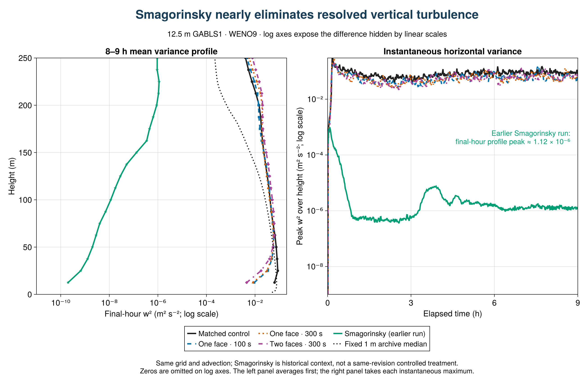
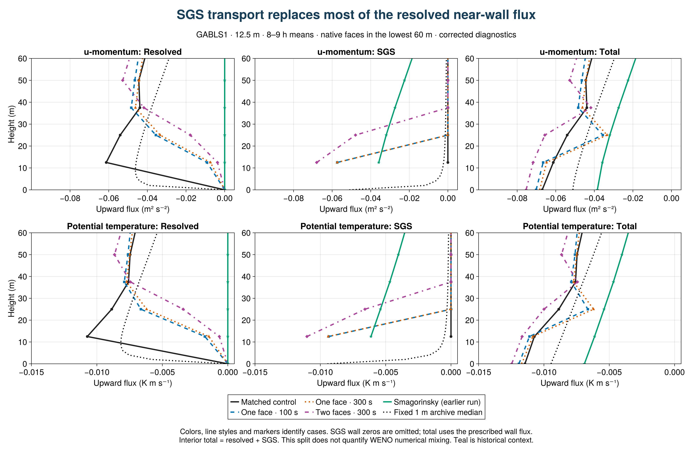

SurfaceLayerDiffusivity: strong response, no improvement in this coarse GABLS1 test
The closure changes the near-wall turbulence substantially, but these three configurations do not improve agreement with the fixed 1 m LES median on the profile measures tested. This is a preliminary result from four completed, paired 9 h runs at 12.5 m resolution (32³ cells, 400 m cube), all using WENO9 and the same frozen model source. It is not a conclusion about all resolutions or stable boundary layers.

Vector figure
What changes?
At the first interior face, z = 12.5 m, final-hour w² falls from 0.0635 m²/s² in the control to 0.00924, 0.00817 and 0.00451 m²/s² with the one-face/100 s, one-face/300 s and two-face/300 s closures: reductions of 85%, 87% and 93%. The fixed 1 m median at this height is about 0.0774 m²/s². Domain-integrated resolved TKE falls by 18%, 20% and 15%, respectively. The much larger local decrease demonstrates that the response is concentrated near the wall.
At the same face, w³ changes from +0.00902 m³/s³ to small negative values. Skewness changes from +0.56 to −0.21, −0.25 and −0.42. The sign describes asymmetry in vertical motions, not an improvement score. The archive has no directly comparable w³ reference; its available skewness reference is shown separately.
Does it agree better with the reference?
For the final hour, RMS discrepancies from the fixed 1 m median over native model levels in 0 < z ≤ 200 m are:
| Configuration | Mean u (m/s) | Mean θ (K) | w² (m²/s²) |
|---|
| Matched control | 0.715 | 0.372 | 0.0160 |
| One face / 100 s | 1.009 | 0.431 | 0.0240 |
| One face / 300 s | 0.938 | 0.418 | 0.0245 |
| Two faces / 300 s | 1.147 | 0.463 | 0.0302 |
| Smagorinsky (earlier source) | 0.581 | 0.371 | 0.0395 |
The reference median is linearly interpolated to the native simulation levels for this descriptive calculation; the simulation profiles themselves are not interpolated. The reference is an ensemble of LES, not observational truth. These are unweighted profile errors, not statistical significance tests or a combined ranking.
Final-hour u* increases from 0.279 m/s in the control to 0.292, 0.289 and 0.301 m/s, while the reference average is 0.262 m/s. The surface cooling flux becomes more negative, moving farther from the reference as well. The one-face 100 s and 300 s runs give similar near-wall responses; extending support to two faces strengthens the variance suppression. The direction of the near-wall variance, skewness, surface-drag and resolved-energy changes is also present in the preceding hour, although magnitudes differ. A single seed and two adjacent windows do not establish sampling uncertainty.

Vector figure
Comparison with Smagorinsky at 12.5 m
The earlier WENO9 + Smagorinsky run is now shown in teal, with stars on profiles. It uses the same 400 m cube, 32³ grid, 9 h duration and perturbation seed, with Cs = 0.16, Cb = 1 and Pr = 1. Its source revision differs from the four matched SurfaceLayerDiffusivity runs: this is contextual evidence, not a fifth same-revision controlled treatment. Its original export hashes have been verified; unchanged data and manifest and case settings are retained alongside the plotting source.
Smagorinsky has almost no resolved vertical turbulence at this resolution. The maximum of its final-hour w² profile is 1.12 × 10⁻⁶ m²/s², versus 0.0864 in the matched control and 0.0576–0.0615 in the SLD cases. At z = 12.5 m its w² is only 2.01 × 10⁻¹⁰ m²/s². Its mean resolved-TKE integral is 0.000297 m³/s², versus 34.2 in the matched control. Final-hour u* is 0.223 m/s and surface sensible heat flux is −9.17 W/m². These statistics use the same windows as the other cases.
The mean-u RMS discrepancy is smaller than in the matched control and the mean-theta discrepancy is similar, despite the absence of appreciable resolved turbulence. Mean-profile agreement alone therefore misses a major difference in the simulated flow. The logarithmic variance plots expose this contrast; most Smagorinsky skewness levels are masked because their variance is below the threshold. The fixed 1 m archive contains no directly comparable time series of the instantaneous vertical maximum of w², so that panel has no reference curve.

Vector figure
Should surface-layer viscosity act only on u and v?
That is a useful controlled test. The present SurfaceLayerDiffusivity applies vertical diffusion to all three momentum components. Removing its contribution to w would isolate the effect of direct vertical-velocity damping, while keeping its horizontal-momentum transport. However, changing u and v still changes shear production and its tracer diffusion still changes stratification, so w² can respond even without direct w diffusion. The existing comparisons do not identify which mechanism dominates.
A clean next comparison would retain the one-face, 300 s configuration, tracer diffusivity, grid, initialization and forcing, and change only whether the SLD viscosity acts on w. The implementation also needs an explicit check of both the tendency and vertically implicit solve. No u/v-only result is included here, and the historical Smagorinsky result does not establish that this modification would improve fidelity.
Where does the missing resolved transport go?
The corrected diagnostics show that SGS mixing carries 86–95% of the first-level u-momentum flux in the SLD cases. At z = 12.5 m, the final-hour means are:
| Configuration | Resolved u′w′ | SGS u-momentum flux | Total u-momentum flux | SGS / total magnitude |
|---|
| Matched control | −0.06128 | 0 | −0.06128 | 0% |
| One face / 100 s | −0.00915 | −0.05737 | −0.06653 | 86% |
| One face / 300 s | −0.00734 | −0.05741 | −0.06476 | 89% |
| Two faces / 300 s | −0.00373 | −0.06802 | −0.07175 | 95% |
Flux units are m²/s²; negative values indicate downward transport of positive u momentum. SGS flux largely replaces resolved flux: the total magnitude is only 9%, 6% and 17% larger than the control, even as the resolved contribution falls sharply. The corresponding total potential-temperature flux magnitudes rise by about 4%, 1% and 9%; SGS supplies 84%, 87% and 94% of those totals. The transport split helps explain how surface exchange can persist alongside reduced resolved turbulence. It does not establish which damping mechanism controls w², nor does it demonstrate improved fidelity. These totals include resolved plus explicit closure transport; they do not measure WENO numerical mixing.

Vector figure · Exact flux audit and coefficients
The four corrected runs reproduce every previously reported mean-field and resolved-moment profile exactly. The new diagnostic evaluates the native implicit coefficient–gradient products before averaging. GPU validation and an independent export audit check nonzero supported SGS flux, zero flux outside the one- or two-face support, exact output schedules and interior total = resolved + SGS within Float32 reduction tolerance. At the wall, the total uses the prescribed boundary flux; the artificial SGS wall zero is omitted from the figure.
Historical diagnostic exclusion
The original array 7156 reported zero SGS flux because its generic diagnostic omitted the vertically implicit contribution. Its SGS/combined fluxes, stress-based depth and dependent budgets remain excluded. Its files and exclusion record are preserved unchanged; passing file/shape/hash checks did not establish physical semantics. The current figures use the separately archived, corrected array 7293. No boundary-layer-depth or production-budget conclusion is drawn here.
Reproduce and extend
The final-hour profiles average the two true half-hour windows ending at 30600 and 32400 s. Surface/energy statistics use 60 instantaneous samples at 28860:60:32400 s. Skewness is the ratio of window-mean third moment to variance raised to 3/2; levels with w² < 10⁻⁶ m²/s² are omitted in its plot. The preceding-hour sensitivity uses bins ending at 27000 and 28800 s.
Julia figure and analysis source · Julia transport plots · Julia flux audit · Exact metrics, definitions and hashes · Physical summary table · Corrected export collection · Historical export collection
Breeze source: 02a16478869abf556a464f0874925510bb7c233c; scientific evaluation source: a14c3586708de70cd3a47f44878991a440678442; export analysis: e0655cf77568bc24af1b0bcd7a4c9efe46aa9f45. Four-case array: 7293. Source-bound GPU validation and timing/flux semantic checks precede this admission. The corrected collection admitted all four cases with no rejected exports.
The next evidence needed is the matched GABLS3 transfer test and the bounded neutral-flow check. GABLS3 replacement runs are held for an independent surface-humidity boundary-condition review and validation of its correction. The present GABLS1 result is a reason to investigate the closure's strength and support, not to tune it to one aggregate metric. Original DYCOMS and GABLS1 studies are retained in the master report.
Resolved-flux factor 2: limited response
Matched sensitivity | 21 September 2026 | GABLS1, 12.5 m, WENO9, one interior face, 300 s filter, 9 h, one seed.
Result: crediting twice the resolved transport reduces the added diffusivity, but does not restore resolved turbulence. In the final hour, first-level w² rises 7.1%, while peak w² falls 6.3% and vertically integrated resolved TKE falls 6.4%. Both factors remain far below the earlier no-closure near-wall variance.
The intervention: factor a multiplies only the signed local filtered resolved flux inside the closure deficit max(0, 1 - a Fresolved/Ftarget). The same factor is used for momentum and heat. Factor 2 assumes an additional numerical flux equal and aligned with resolved transport. It neither doubles viscosity nor rescales diagnostic fluxes. The experiment does not measure numerical transport or establish that assumption.
Mechanism: final-hour first-face viscosity falls from 1.321 to 1.118 m²/s (15.4%); heat diffusivity falls from 1.216 to 0.774 m²/s (36.3%). The first-face SGS share of u-momentum transport remains large: 88.7% versus 86.8%. Reduced closure coefficients therefore produce only a modest change in the resolved/SGS partition.
Moments: at 12.5 m, w² changes from 0.008171 to 0.008754 m²/s², versus 0.06353 without interior closure. The third moment changes from -1.872e-4 to -1.186e-4 m³/s³, and skewness from -0.253 to -0.145. Skewness is the ratio of hourly averaged moments, not an average of instantaneous skewness.
Mean profiles and exchange: u* falls from 0.2886 to 0.2831 m/s and sensible heat flux changes from -15.54 to -15.38 W/m². Against the fixed 1 m median at native heights 0<z<=200 m, final-hour RMS errors change by +0.3% for u, -9.2% for theta, and -7.3% for w². Smaller profile errors coexist with lower resolved energy; they do not demonstrate restored turbulence.
Hour sensitivity matters: in 7–8 h, first-level w² instead falls 5.1%, integrated TKE falls 10.4%, and the temperature-profile error increases 8.0%. Peak variance and integrated energy decrease in both windows. The near-wall variance increase and temperature improvement in the last hour are not consistent across the two hours. One seed and neighboring hours do not provide an uncertainty estimate.
Comparison integrity: two fresh cases passed strict admission with matching source, grid, seed, initialization and exact 19-profile/541-series schedules. The factor-1 run reproduces every exported profile and time-series value from corrected array 7293's one-face300 case bit for bit. Native physical flux partition, support and coefficients were checked. Fixed 1 m medians are LES references, not observations.
Execution provenance: both model children completed 32400 s and exited zero. Slurm nevertheless marked the factor-2 batch exit as one. A separate harmless login-shell probe reproduces that pattern through failing clearconsole in .bashlogout under set-e; actual batch shell depth was not recorded. The discrepancy and canceled downstream job are preserved. Admission relies on independently complete outputs, durable child exits, matching sources and logs, not a relabeled scheduler success.
Conclusion: this factor-2 test changes coefficients and exchange modestly, but provides no evidence of broad turbulence recovery. It does not identify the numerical flux or establish a calibrated correction factor. All earlier DYCOMS, GABLS1 and SurfaceLayerDiffusivity results remain in the master report. GABLS3's separate humidity-boundary validation is still pending; no new GABLS3 science is included.
| Final-hour quantity | Factor 1 | Factor 2 |
|---|
| First-face w² (m²/s²) | 0.0081706 | 0.008754 |
| First-face w³ (m³/s³) | -0.0001872 | -0.00011863 |
| First-face skewness | -0.25347 | -0.14484 |
| Integrated resolved TKE (m³/s²) | 27.26 | 25.513 |
| u* (m/s) | 0.2886 | 0.28306 |
| Surface sensible heat (W/m²) | -15.538 | -15.384 |
| First-face viscosity (m²/s) | 1.3212 | 1.118 |


Detailed numerical comparison · Complete metrics · Julia audit · Julia plots · Collection manifest · Scheduler provenance
Sources: Breeze 1df78f2, evaluation ec714e5. GPU validation7330 passed7,924 checks; scientific array7331 admitted2/rejected0. Numerical flux remains unmeasured.